Released: December 14, 2011
Next Release: December 21, 2011
Leasing resumes, but trends in Gulf of Mexico production hinge on the timing and productivity of current deepwater developments
Today in New Orleans, the Bureau of Ocean Energy Management (BOEM) is holding Western Gulf of Mexico Lease Sale 218, the first oil and natural gas lease sale in the Gulf of Mexico since all leasing and most drilling activity was suspended in the wake of the Macondo disaster in April 2010. Lease Sale 218 follows the gradual resumption of exploration and development drilling in the deepwater U.S. Gulf of Mexico (GOM).
According to BOEM estimates, the 20.6 million acres on offer in Lease Sale 218 could generate production of 222 million to 423 million barrels of oil and 1.49 trillion to 2.65 trillion cubic feet of natural gas, much of which would be from deepwater fields. It is unlikely, however, that any oil or natural gas discovery made in the deepwater portions of the acreage will be brought into production over the near term. It could take several months or even years before an operator decides whether to start drilling an exploration well on a tract acquired in Lease Sale 218. Further, as This Week In Petroleum discussed in a previous edition, the lag from discovery to first production can be years for deepwater fields, particularly if located in more remote areas relatively far from existing production and pipeline infrastructure.
Central to the GOM's near-term production prospects, therefore, is a group of nearly 30 deepwater projects in various stages of development, several of which had been delayed by the drilling moratorium (Table 1). These include "stand-alone" projects targeting discoveries of several hundred million barrels and more modest-sized projects connecting comparatively small discoveries to existing host production facilities. Further production increases are expected from the re-development of mature producing deepwater fields. Oil, which sells at a significant premium relative to natural gas on an energy-equivalent basis, is generally the primary target of deepwater GOM operators due to the relatively high cost of deepwater exploration and production programs.
Figure 1 shows announced and anticipated annual deepwater GOM field production starts from 1990 through 2014, as well as deepwater GOM oil and natural gas production from 1990 through 2010. The relatively high number of fields scheduled for 2011 and 2012 production start-ups reflects, in part, the backlog associated with Macondo-related development drilling delays.
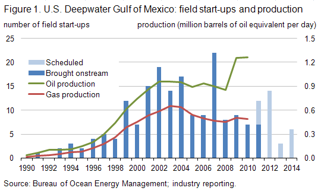
One major deepwater development expected onstream in 2011 (but not yet producing) is Who Dat (operated by LLOG Exploration). Several smaller projects are also slated for a late 2011 start-up, but have not yet been reported as producing. It can be expected that production starts for many of these will be pushed into 2012; one such project is the ultra-deepwater Cascade-Chinook (Petrobras), the GOM's first development using a floating production, storage, and offloading vessel (FPSO). Among other key projects scheduled for production starts between 2012 and 2014 are Galapagos (Isabela, Santa Cruz, Santiago fields; BP), Caesar-Tonga (Anadarko), Lucius (Anadarko), Tubular Bells (Hess), and Jack-St. Malo (Chevron). These larger developments generally target estimated recoverable oil reserves of at least 100 million barrels and as much as 500 million barrels or more (ultimate recoverability will depend on several factors, including reservoir performance). Further delays to some of these projects are possible, and could result for a variety of reasons, including rig availability (particularly those with ultra-deepwater capabilities), third-party pipeline completion schedules, cost increases associated with escalating demand for contractor services, and the pace of permitting by the Bureau of Safety and Environmental Enforcement (BSEE). (Note: BOEM and BSEE were officially separated from the Bureau of Ocean Energy Management, Regulation and Enforcement in October 2011. Information on the separation and the functions each performs may be found here.)
It is important to note that the challenges and costs associated with deepwater developments generally, and ultra-deepwater projects in particular, make it difficult for operators to predict production start dates with precision. This holds true for more recent deepwater discoveries undergoing or awaiting comprehensive appraisal programs, such as ExxonMobil's Hadrian and Julia discoveries, Shell's Appomattox find, and BP's Tiber discovery. Many of these are high-profile discoveries for which initial estimates point to resource potential of between several hundred million and one billion barrels. Should these fields' production volumes be commensurately impressive, then they will underpin longer-term production prospects for the deepwater GOM.
| Table 1. Deepwater Gulf of Mexico Production Starts: 2011-2014 | ||||||
| Field | Operator | Protraction Area | Block | Water Depth (feet) | Discovery Year | Production Start Year |
|---|---|---|---|---|---|---|
| Producing | ||||||
| Anduin West | Newfield | Mississippi Canyon | 754 | 2,696 | 2008 | 2011 |
| Appaloosa | Eni | Mississippi Canyon | 503 | 2,805 | 2008 | 2011 |
| Callisto | Anadarko | Mississippi Canyon | 876 | 7,788 | 2001 | 2011 |
| Condor | Deep Gulf | Green Canyon | 448 | 3,266 | 2008 | 2011 |
| EW998 | Walter | Ewing Bank | 998 | 1,000 | 2009 | 2011 |
| Gladden | Newfield | Mississippi Canyon | 800 | 3,116 | 2008 | 2011 |
| Tobago | Shell | Alaminos Canyon | 859 | 9,627 | 2004 | 2011 |
| Developing | ||||||
| MC241 | Walter | Mississippi Canyon | 241 | 2,427 | 2006 | 2011 |
| Ozona | Marathon | Garden Banks | 515 | 3,000 | 2001 | 2011 |
| Pyrenees | Newfield | Garden Banks | 293 | 2,100 | 2009 | 2011 |
| South Raton | Noble | Mississippi Canyon | 292 | 3,400 | 2008 | 2011 |
| Who Dat | LLOG | Mississippi Canyon | 503/547 | 3,100 | 2007 | 2011 |
| Bushwood | Apache | Garden Banks | 463 | 2,700 | 2009 | 2012 |
| Caesar | Anadarko | Green Canyon | 683 | 4,457 | 2006 | 2012 |
| Cascade | Petrobras | Walker Ridge | 206 | 8,143 | 2002 | 2012 |
| Cheyenne East | Anadarko | Lloyd Ridge | 400 | 9,187 | 2011 | 2012 |
| Chinook | Petrobras | Walker Ridge | 469 | 8,831 | 2003 | 2012 |
| Clipper | ATP | Green Canyon | 299 | 3,452 | 2005 | 2012 |
| Goose | LLOG | Mississippi Canyon | 751 | 1,624 | 2002 | 2012 |
| Isabela | BP | Mississippi Canyon | 562 | 6,535 | 2007 | 2012 |
| Mandy | LLOG | Mississippi Canyon | 199 | 2,478 | 2010 | 2012 |
| Morgus | ATP | Mississippi Canyon | 942 | 4,000 | 1999 | 2012 |
| Santa Cruz | Noble | Mississippi Canyon | 519 | 6,515 | 2009 | 2012 |
| Santiago | Noble | Mississippi Canyon | 519 | 6,500 | 2011 | 2012 |
| West Tonga | Anadarko | Green Canyon | 726 | 4,674 | 2007 | 2012 |
| Wide Berth | Apache | Green Canyon | 490 | 3,700 | 2009 | 2012 |
| Axe | Newfield | Desoto Canyon | 4 | 5,822 | 2010 | 2013 |
| Dalmatian | Murphy | Desoto Canyon | 48 | 5,876 | 2008 | 2013 |
| Knotty Head | Nexen | Green Canyon | 512 | 3,557 | 2005 | 2013 |
| Big Foot | Chevron | Walker Ridge | 29 | 5,235 | 2005 | 2014 |
| Entrada | ATP | Garden Banks | 782 | 4,531 | 2000 | 2014 |
| Jack | Chevron | Walker Ridge | 759 | 6,963 | 2004 | 2014 |
| Lucius | Anadarko | Keathley Canyon | 875 | 7,168 | 2009 | 2014 |
| St. Malo | Chevron | Walker Ridge | 678 | 7,036 | 2003 | 2014 |
| Tubular Bells | Hess | Mississippi Canyon | 725 | 4,300 | 2003 | 2014 |
| Source: Bureau of Ocean Energy Management; industry reporting. Note: Production start dates are based on publicly available information and are subject to change; operators' confidential scheduling may differ. |
||||||
Diesel price falls for third consecutive week
The U.S. average retail price of regular gasoline declined a fraction of a cent this week to remain at $3.29 per gallon. The average price is $0.31 per gallon higher than last year at this time. The national average gasoline price has fallen in 12 of the last 14 weeks. Regional price changes were mixed. The East Coast price increased slightly but remained at $3.30 per gallon. The Midwest sold for more than a penny higher to end at $3.23 per gallon. The Gulf Coast had a decline of less than a penny and remained the lowest-priced region in the country. The largest drop occurred in the Rocky Mountains where the price fell six cents while the West Coast remained the most expensive region at $3.55 per gallon after dropping over four cents per gallon.
The national average diesel price fell for the third straight week, losing almost four cents to hit $3.89 per gallon. The diesel price is $0.66 per gallon higher than last year at this time. Diesel prices were down across all the regions. The biggest decrease occurred in the Midwest where the diesel price was almost six cents below last week's average. The Rocky Mountains and West Coast followed with average prices declining more than four cents in both regions. The Gulf Coast had a decrease of over three cents. The average diesel price on the East Coast was down about two cents on the week.
U.S. residential heating oil price declines
Residential heating oil prices decreased during the week ending December 12, 2011. The average residential heating oil price fell by less than $0.03 per gallon last week to reach a price of $3.87 per gallon, an increase of $0.62 per gallon from the same time last year. The wholesale heating oil price decreased by $0.10 per gallon last week to $2.98 per gallon, $0.45 per gallon more than last year at this time.
The average residential propane price increased by less than 1 cent per gallon to remain at $2.85 per gallon, which is $0.23 per gallon higher than last year. Prices increased in all regions. The wholesale propane price decreased by $0.02 per gallon to $1.43 per gallon. This was an increase of $0.10 per gallon when compared with the December 13, 2010 price of $1.33 per gallon.
Propane inventories fall by 0.5 million barrels
Last week, total U.S. inventories of propane dropped by 0.5 million barrels to end at 59.2 million barrels in total. This stock draw was well below the typical level for this time of year, as U.S. propane stocks fell by over two million barrels, on average, during the same week over the previous five years. Midwest and Gulf Coast regional stocks each drew 0.3 million barrels of propane, and Rocky Mountain/West Coast inventories also fell slightly. The East Coast region added 0.1 million barrels of propane inventory. Propylene non-fuel use inventories represented 8.4 percent of total propane inventories.
Text from the previous editions of This Week In Petroleum is accessible through a link at the top right-hand corner of this page.
| 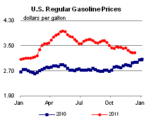 | 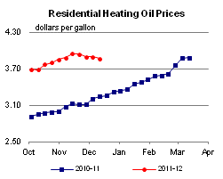 | ||||||
| 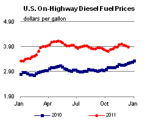 | 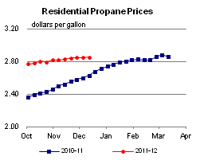 | ||||||
| Retail Data | Changes From | Retail Data | Changes From | ||||
| 12/12/11 | Week | Year | 12/12/11 | Week | Year | ||
| Gasoline | 3.286 | Heating Oil | 3.866 | ||||
| Diesel Fuel | 3.894 | Propane | 2.852 | ||||
| 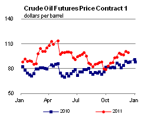 | 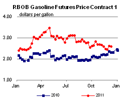 | ||||||||||||||||||||||||||
|
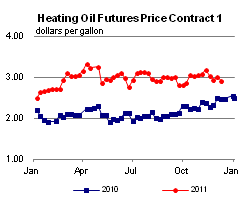 | ||||||||||||||||||||||||||
| *Note: Crude Oil Price in Dollars per Barrel. | |||||||||||||||||||||||||||
| 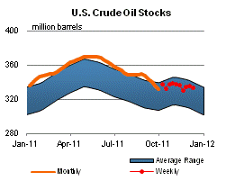 | 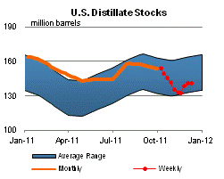 | ||||||
| 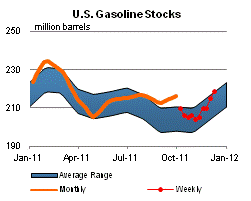 | 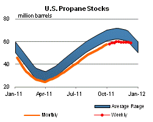 | ||||||
| Stocks Data | Changes From | Stocks Data | Changes From | ||||
| 12/09/11 | Week | Year | 12/09/11 | Week | Year | ||
| Crude Oil | 334.2 | Distillate | 141.5 | ||||
| Gasoline | 218.8 | Propane | 59.183 | ||||